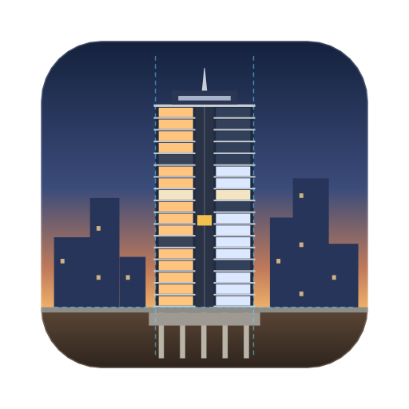
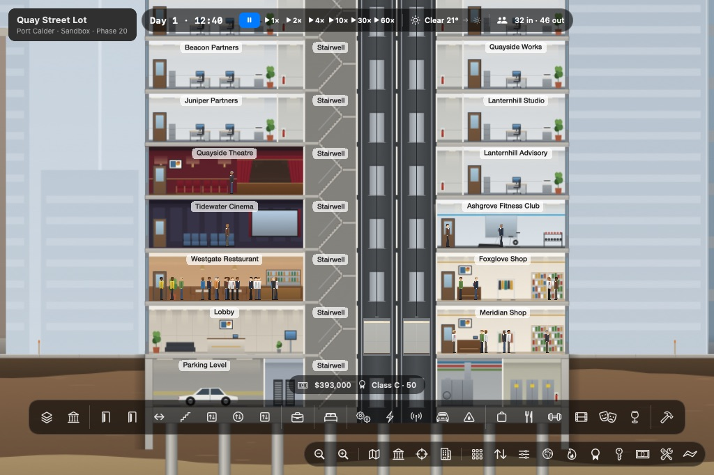
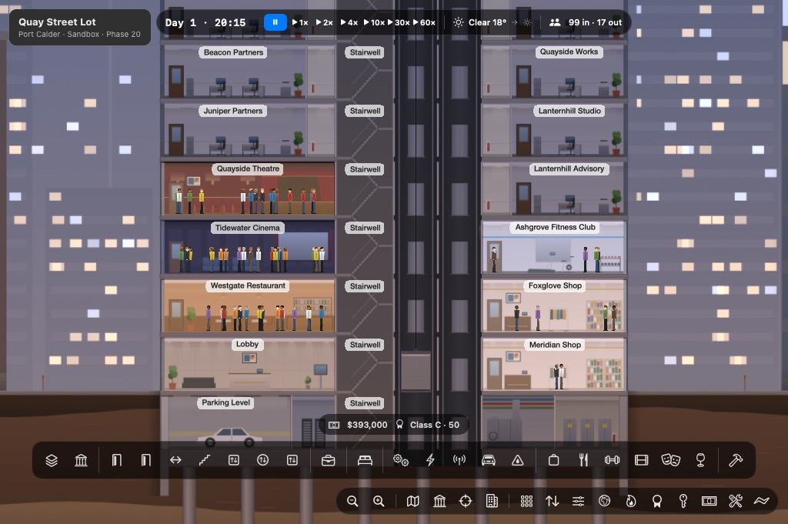
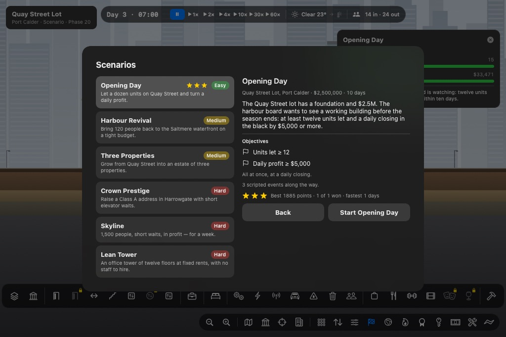

SKYLINE ARCHITECTA tower-building management game in cross-section. Lay the floors, run the elevators, let the offices and flats, and keep every resident, worker and visitor on the move, from a four-storey block to a tower of five hundred floors.
Read the manual What you can do
Floors, lobbies, offices, flats, plant rooms and amenities on a metre grid, over a foundation you widen and dig deeper. Every step can be undone.
Residents, office workers, visitors and your own staff follow their day: to work, out for lunch, home in the evening, all walking and riding for real.
Banks of cars, express shuttles to sky lobbies, service elevators, three dispatch strategies, and traffic you can see waiting on every landing.
Prospects weigh rent, access, noise, view and services before they sign, and move out when they are unhappy. Rent your flats out or sell them.
Electricity, water, climate and data from your own plant rooms; janitors and technicians; waste, taxes, energy prices, loans, and a daily closing at 06:00.
Seasons, storms and heatwaves, a city that lights up at night, and fires your sprinklers and the brigade have to put out.
Buy land in Port Calder, Harrowgate and Saltmere, each with its own market, ground and weather, all on one account.
Panels, menus and the manual in four text sizes, Tab navigation through the panels, and every command on a Mac or iPad keyboard.
A tutorial and six scenarios with stars and points, and data-only content packs to add cities, rooms and scenarios of your own.


Screenshots are real captures from a development build of the Mac version.
Skyline Architect is not released yet. Every system on this page works and is tested in the development builds. Before version 1.0 we still need:
The manual describes the game as it is today.